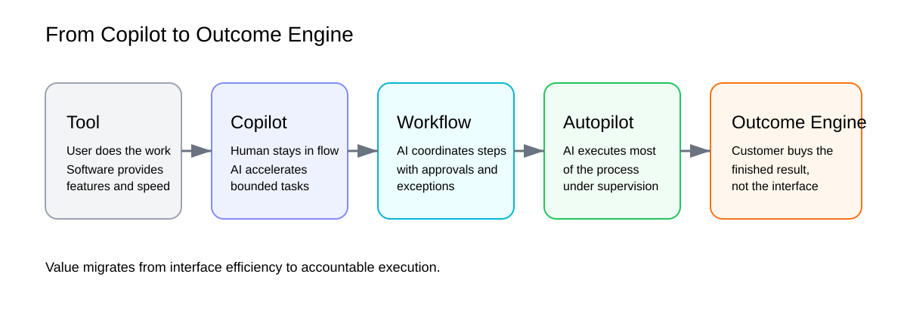
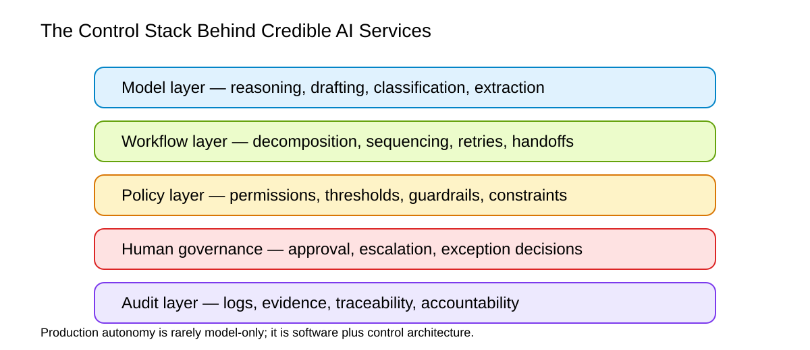

Services Are the New Software — but Only If You Can Own the Exceptions
Source asciidoc: `docs/article/services-the-new-software.adoc`
Sequoia’s March 2026 thesis, Services: The New Software, argues that the next trillion-dollar company will not sell a better tool, but a better outcome: software that performs service work end to end rather than merely assisting a human operator. That framing is directionally right and strategically important. Yet it becomes truly useful only when tested against independent data on enterprise adoption, labor effects, workflow redesign, governance, and professional-services economics. The real prize is not “AI that does tasks.” It is operational software that can absorb outsourced work, escalate judgment, survive exceptions, and accept accountability.
Introduction: from tool-selling to work-selling
Sequoia’s central provocation is simple: if a company sells software tools, each model improvement threatens to collapse that product into a feature; if a company sells completed work, every model improvement makes the business faster, cheaper, and harder to compete with. In Sequoia’s framing, the next giant AI company will be “a software company masquerading as a services firm,” because customers will buy the finished result rather than the interface used to produce it.[1]
That idea lands because it captures a real transition already visible across the AI market. The center of gravity is shifting from copilots, which help humans work faster, toward narrower forms of autopilot, which deliver work with only selective human supervision. The change began in software engineering because coding is unusually legible to machines: tasks are decomposable, outputs are testable, and feedback loops are short. Anthropic’s March 2026 Economic Index reports that computer and mathematical tasks still account for 35 percent of Claude.ai conversations, while coding-related work continues migrating toward API-based, agentic execution.[2]
The larger question is whether the same logic can spread into legal operations, accounting, managed IT, healthcare administration, recruiting, and other service-heavy industries. My view is yes — but not in the naive way many AI narratives suggest. The strongest version of the thesis is not that software will replace services overnight. It is that software is moving up the value chain: from assisting labor to packaging labor, from improving throughput to owning a contracted outcome.

Intelligence can be automated faster than judgment
One of Sequoia’s most useful distinctions is between intelligence and judgment. Intelligence covers activities like implementing against a specification, comparing alternatives, following procedures, testing hypotheses, triaging bugs, translating formats, and reconciling structured inputs. Judgment includes choosing which trade-off matters, when to escalate risk, which ambiguity is acceptable, when to preserve optionality, and whether speed is worth debt. In other words, intelligence is often procedural; judgment is contextual.
This distinction helps explain why coding moved first. Modern software development contains a large surface area of bounded, evaluable work: writing boilerplate, refactoring, test generation, static debugging, issue decomposition, migration scripting, and log analysis. That is precisely the kind of environment in which agents become commercially useful. Anthropic’s data suggests that AI usage in coding is not merely a consumer-chat phenomenon but increasingly an API and workflow phenomenon, which matters because API traffic is much closer to embedded operational systems than chat-based experimentation.[3]
But Sequoia’s dichotomy is also too clean if taken literally. In real businesses, judgment is not only the final executive decision. It is scattered throughout intake, scoping, exception handling, liability checks, policy enforcement, pricing discretion, escalation paths, client communication, and sign-off. Much of what firms call “service” is not raw cognitive labor; it is risk management under messy conditions. This is why the real frontier is not intelligence alone. It is the architecture that tells an AI system when not to proceed, when to request approval, and how to document what happened.
Anthropic’s February 2026 research on agent autonomy is revealing here. It found that 80 percent of tool calls came from agents with at least one safeguard, 73 percent appeared to involve a human in the loop in some way, and only 0.8 percent of actions appeared irreversible.[4] The lesson is not that autonomy failed. The lesson is that real autonomy in production is already being wrapped in permissions, checkpoints, and supervision. The market is not moving toward “no humans.” It is moving toward fewer humans at higher-value control points.

The economic wedge is services, not seats
Sequoia’s most commercially important insight is that the better wedge is not the software budget; it is the services budget. Even where exact ratios vary by sector, the broader market structure supports the idea. Gartner’s February 2026 forecast puts worldwide software spending at roughly $1.43 trillion in 2026 and IT services spending at about $1.87 trillion, both enormous but clearly showing how much value already sits outside pure software licensing.[5]
The point is even sharper in professional services. Thomson Reuters’ 2025 Generative AI in Professional Services Report shows that professionals broadly expect AI to help automate routine, low-value tasks and improve efficiency, but enterprise-wide rollout remains much harder than anticipated. Only 26 percent reported using GenAI on a wide-scale basis, while just 21 percent said their organizations were measuring GenAI ROI at all. Among the smaller group measuring ROI, internal cost savings were the most common metric, while only 38 percent measured client satisfaction.[6]
This is crucial. The market opportunity is not just that services are expensive. It is that most incumbents still evaluate AI as a productivity add-on inside the old delivery model rather than as a chance to repackage the service itself. A copilot reduces the cost of labor. An autopilot reorganizes who owns the workflow, the SLA, the evidence trail, and the margin.
That is why the most attractive verticals are those with four traits:
-
The work is already outsourced or externally contracted.
-
A large share of the workflow is rule-heavy and repetitive.
-
Output quality can be audited.
-
Human review can be concentrated at a few high-risk gates rather than spread across every step.
Recruiting ops, managed IT, revenue cycle management, bookkeeping, insurance ops, compliance operations, and high-volume contract work fit this pattern far better than strategy consulting, enterprise sales, or elite bespoke advisory.
Why most “autopilots” are really managed workflows
If the opportunity is so large, why has the transition been slower than the rhetoric? Because replacing a tool is easy; replacing a service is organizationally invasive.
McKinsey’s 2025 State of AI survey shows this clearly. AI use is now widespread, but most organizations remain in early stages of scaling. About 88 percent of respondents report regular AI use in at least one business function, yet only about one-third say their companies have begun scaling AI programs at the enterprise level. Twenty-three percent report scaling an agentic AI system somewhere in the enterprise, but in any specific function no more than 10 percent report scaling agents. The highest performers are not merely deploying models; they are redesigning workflows, defining when human validation is required, and securing senior leadership ownership.[7]
This is the missing center of most venture discourse. The technical model is only one layer. To sell completed work, a company must also implement:
-
workflow orchestration,
-
policy and permissioning,
-
exception routing,
-
human approval design,
-
auditability,
-
measurement,
-
and contractually credible reliability.
In other words, what looks externally like an “AI service” is internally a control system.
That is also why the most defensible businesses may not look like pure AI products at all. They may resemble software-enabled operations companies with very strong governance. Their moat will not come only from model access. It will come from owning integration points, proprietary exception data, customer-specific policies, escalation histories, and the operational know-how of where automation breaks.
Labor data: strong productivity signal, weaker displacement signal
A serious article on this subject cannot stop at vendor and venture optimism. The labor evidence is more mixed, and that matters because it disciplines the story.
Anthropic’s labor-market research identifies some early pressure in AI-exposed occupations. In the most exposed roles, young workers aged 22 to 25 saw a 14 percent drop in the job-finding rate relative to 2022, though the result is only barely statistically significant and does not appear for workers over 25. Anthropic also reports no clear effect on unemployment rates in the exposed occupations.[8]
By contrast, the NBER paper Large Language Models, Small Labor Market Effects finds precise null effects on earnings and recorded hours in Denmark, ruling out effects larger than 2 percent two years after adoption, even among heavy users and early adopters. It does find task restructuring and occupational switching, but not the dramatic labor-market shock often implied by popular commentary.[9]
These findings are not contradictory. They suggest a deeper point: AI may be changing the shape of work before it changes the headline size of payrolls. Service workflows can be decomposed, standardized, and centralized long before broad layoffs appear in top-line labor data. Entry-level hiring can slow before total unemployment rises. Time savings can accumulate before firms fully redesign job architecture. From a product strategy perspective, that means the service-to-software shift is likely to arrive first through changes in vendor mix, staffing composition, and margin structure rather than through instant mass unemployment.

The real winner will own exceptions, evidence, and trust
The most important strategic correction to Sequoia’s thesis is this: the next great AI company will not win because it automates the average case. It will win because it handles the non-average case better than incumbents.
In a mature service business, the hard part is rarely the happy path. The hard part is a missing document, an inconsistent input, a policy edge case, a client-specific preference, a regulatory threshold, a handoff that failed, or a risk that needs explicit acceptance. The decisive system is therefore not simply “LLM + tools.” It is a layered operating model:
-
a model layer to reason and generate,
-
a workflow layer to decompose and sequence,
-
a policy layer to constrain,
-
a human-governance layer to approve or intervene,
-
and an audit layer to preserve evidence.
This is where the future market will separate into two classes. First, featureized copilots that improve existing software but remain substitutable. Second, outcome engines that package execution, policy, and accountability into something the customer can buy as a result.
The decisive commercial move is to start where the buyer is already comfortable purchasing an external outcome. Replacing a piece of software usually requires product comparison. Replacing an outsourced function can feel like a cleaner business case: lower cost, faster turnaround, tighter SLAs, more transparency, and better instrumentation. The best early winners are therefore likely to attack the services line item before the software line item.
Conclusion: software is not disappearing; it is moving up the stack
Sequoia is right about the direction of travel. The most important AI businesses will increasingly sell outcomes instead of seats, completed work instead of assistance, operations instead of interfaces. But the deeper formulation is not “services are the new software.” It is this: software is learning to absorb service delivery.
That shift is not powered by raw model capability alone. It depends on workflow redesign, policy architecture, human validation, operational telemetry, and the credibility to take responsibility when something goes wrong. The next enduring companies will not merely build smarter copilots. They will build controlled execution systems that can inherit outsourced workflows and improve as models improve.
So yes, the new gold rush is in work, not tools. But the companies most likely to matter will not just “sell the work.” They will sell the work with governance: with exception handling, review gates, explainability, evidence, and trust. That is the harder thesis, the less glamorous thesis — and probably the more trillion-dollar one.
Editorial illustration notes
The SVG diagrams bundled with this article are original editorial visuals created for this piece. They are intentionally schematic and are meant to support discussion, not reproduce any third-party charts.
-
services-ladder.svg— a progression from tool to outcome engine. -
services-control-stack.svg— the control architecture required for credible autopilot systems. -
services-verticals-map.svg— a market map showing where service automation is most commercially plausible.
Sources
-
Julien Bek, “Services: The New Software,” Sequoia Capital, March 5, 2026. https://sequoiacap.com/article/services-the-new-software/
-
Anthropic, “Anthropic Economic Index report: Learning curves,” March 24, 2026. https://www.anthropic.com/research/economic-index-march-2026-report
-
Anthropic, “Measuring AI agent autonomy in practice,” February 18, 2026. https://www.anthropic.com/research/measuring-agent-autonomy
-
Anthropic, “Labor market impacts of AI: A new measure and early evidence,” 2026. https://www.anthropic.com/research/labor-market-impacts
-
McKinsey, “The state of AI in 2025: Agents, innovation, and transformation,” November 5, 2025. https://www.mckinsey.com/capabilities/quantumblack/our-insights/the-state-of-ai
-
Gartner, “Gartner Forecasts Worldwide IT Spending to Grow 10.8% in 2026, Totaling $6.15 Trillion,” February 3, 2026. https://www.gartner.com/en/newsroom/press-releases/2026-02-03-gartner-forecasts-worldwide-it-spending-to-grow-10-point-8-percent-in-2026-totaling-6-point-15-trillion-dollars
-
Thomson Reuters, “2025 Generative AI in Professional Services Report,” 2025. https://www.thomsonreuters.com/content/dam/ewp-m/documents/thomsonreuters/en/pdf/reports/2025-generative-ai-in-professional-services-report-tr5433489-rgb.pdf
-
Anders Humlum and Emilie Vestergaard, “Large Language Models, Small Labor Market Effects,” NBER Working Paper 33777, May 2025; revised October 2025. https://www.nber.org/papers/w33777